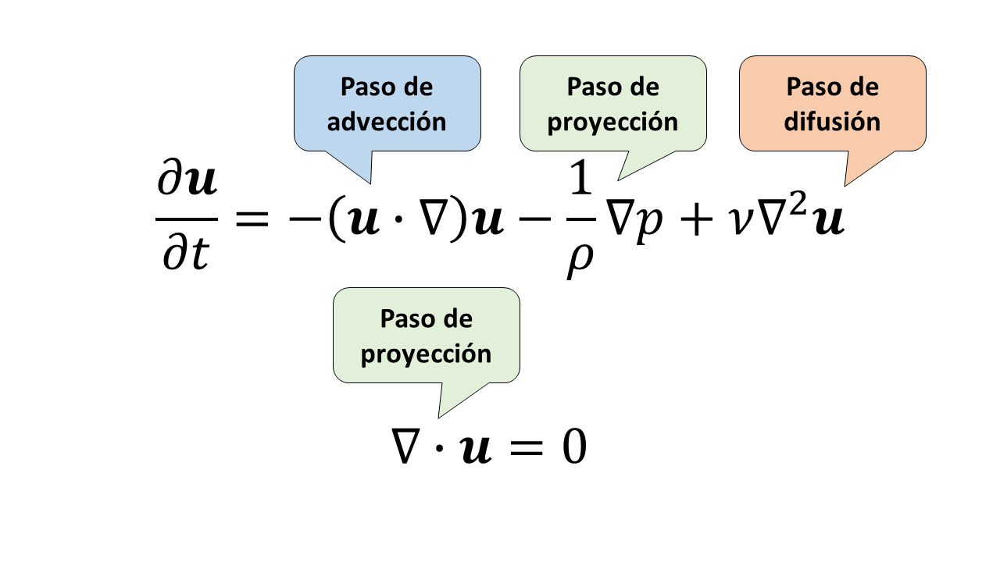

Una pequeña herramienta para visualizar flujo alrededor de objetos.
Proyecto Grupo 7 - Mecánica de Fluidos
Acerca del fenómeno
Todos nosotros en algún minuto de nuestras vidas hemos metido nuestra mano en agua en movimiento y hemos podido ver como esta perturba el movimiento del fluido, generando estelas tras ella. O tal vez hemos visto la estela tras un bote en movimiento sobre un lago tranquilo.
Ambos son ejemplos del fenómeno conocido como flujo alrededor de obstáculos. Como su nombre indica, este fenómeno se produce cuando un fluido se encuentra con un objeto sólido y debe rodearlo para continuar con su curso.
Lo cierto es que este es un proceso al que están sometidos permanentemente todos los fluidos, como por ejemplo el aire rodeando todos los objetos de tu casa. Por lo tanto, hacemos la distinción: nos estamos refiriendo a flujos a altas velocidades. Ya sea que el objeto esté quieto en comparación con el movimiento del fluido, o que el fluido esté quieto en comparación con el movimiento del obstáculo. En ambos casos interesa estudiar el fenómeno por razones diferentes.
Obstáculo quieto en comparación con el flujo
Este caso podemos verlo en los pilares de los puentes. El flujo, al rodear los pilares del puente, se vuelve turbulento, lo que puede causar erosión alrededor del pilar y en el lecho del río. Es importante estudiar qué tan turbulento se vuelve el fluido según los parámetros del flujo y la forma del obstáculo, ya que esto determina el impacto que tiene el puente sobre el río y la duración de los pilares. En la figura de la derecha podemos observar el ajugero que se puede producir a los pies de un pilar
Flujo quieto en comparación con el obstáculo
Esta situación es observable en la interacción de vehículos con los fluidos que los rodean, como el aire y agua alrededor de automóviles, barcos, submarinos e incluso el casco de un ciclista. Para minimizar la resistencia del aire o agua al movimiento del cuerpo y así aumentar las velocidades del vehículo, se hace necesario el desarrollo de diseños aerodinámico o hidrodinámico. En la figura de la izquierda se observa la distribución de presiones y líneas de corriente alrededor del diseño de un automóvil.
Esta herramienta permite simular este fenómeno en dos dimensiones. Su principal utilidad es ver como afecta forma del obstáculo y la viscosidad del fluido a la generación de flujo turbulento tras el obstáculo.
Acerca de la simulación
La simulación está diseñada en base al famoso paper de Jon Stam “Stable Fluids” donde el autor logró crear un algoritmo de simulación para fluidos basados en simplificaciones de las ecuaciones de Navier Stokes, este algoritmo utiliza una modelación semi-lagrangiana; es decir, ciertos pasos consideran el fluido como un campo vectorial (enfoque Euleriano), y ciertos pasos lo consideran como un conjunto de partículas (enfoque Lagrangiano). En todo momento la velocidad del fluido está almacenada en una matriz donde la celda [i,j] contiene la velocidad del fluido en el punto (i,j). La simulación calcula la velocidad en el tiempo t a partir de la velocidad en el tiempo t-dt en 3 pasos:
Advección:
Este paso añade los efectos de advección considerando el fluido como partículas, mediante un método que actualiza las velocidades tomando en cuenta la dinámica de cada partícula en el instante previo.
Difusión:
En este paso se agregan los efectos de la viscosidad y se introducen las líneas de corriente en el fluido.
Proyección:
Este paso añade los efectos de conservación de la masa asumiendo que el fluido es incompresible. Para esto, asegura que en cada celda del fluido tiene que salir la misma cantidad de fluido que entra.
Relación con Navier-Stokes: La simulación se basa en una simplificación de las ecuaciones de Navier - Stokes, en donde cada paso se relaciona con una parte de las ecuaciones como se observa en el siguiente diagrama:

Limitaciones: Para el paso de advección se considera la velocidad de las partículas en un instante previo igual a Δt, el tamaño del timestep tiene relación directa con la calidad de la simulación. Mientras más pequeño el Δt, mayor precisión física. Esto es especialmente cierto para flujos turbulentos (Número de Reynolds alto), debido a que al tener una dinámica más caótica, resulta más efectivo simular con timestep más pequeños.
En nuestro caso mantuvimos el timestep constante, por lo que al aumentar el número de Reynolds disminuirá la precisión física de nuestra simulación.
Leyenda
Velocidad
La tonalidad del color del fluido en cada punto representa ángulo de velocidad de acuerdo con la figura de la izquierda
La magnitud de la velocidad está representada por la luminosidad de este color: mientras menos magnitud, más oscuro.
Presión
La tonalidad el color del fluido en cada punto representa el valor de la presión relativa de acuerdo con el gradiente de la izquierda.
Menos presión es más azul, más presión es más rojo, pasando por verde para presión relativamente nula.